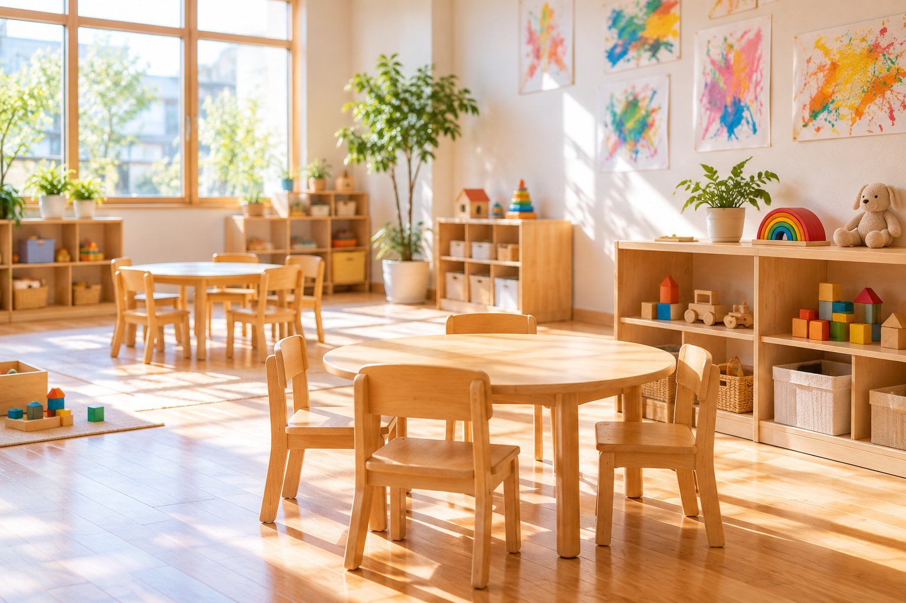
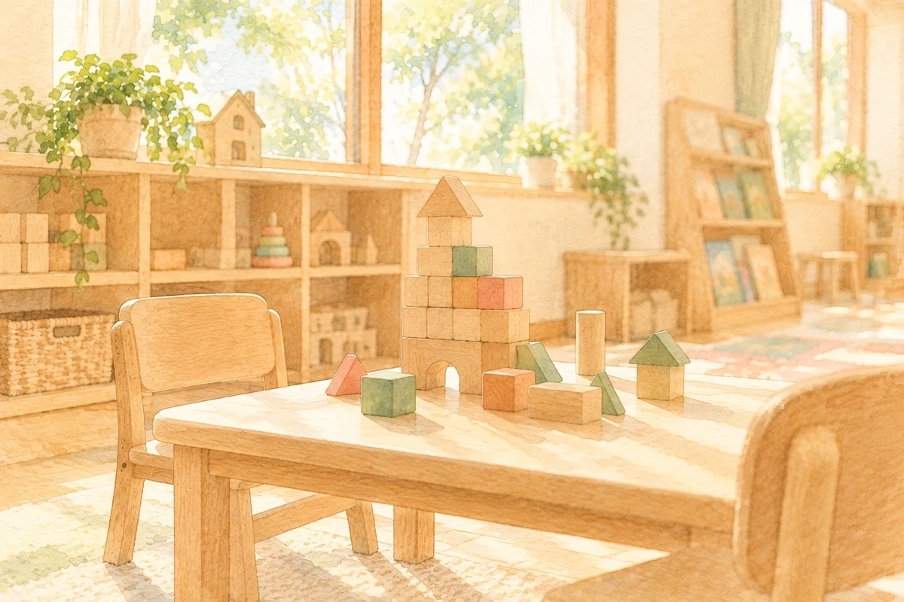
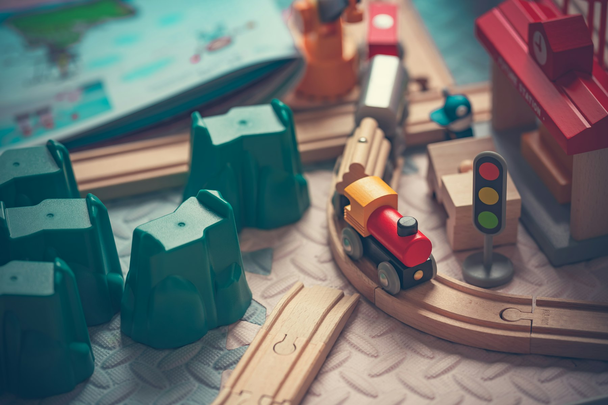
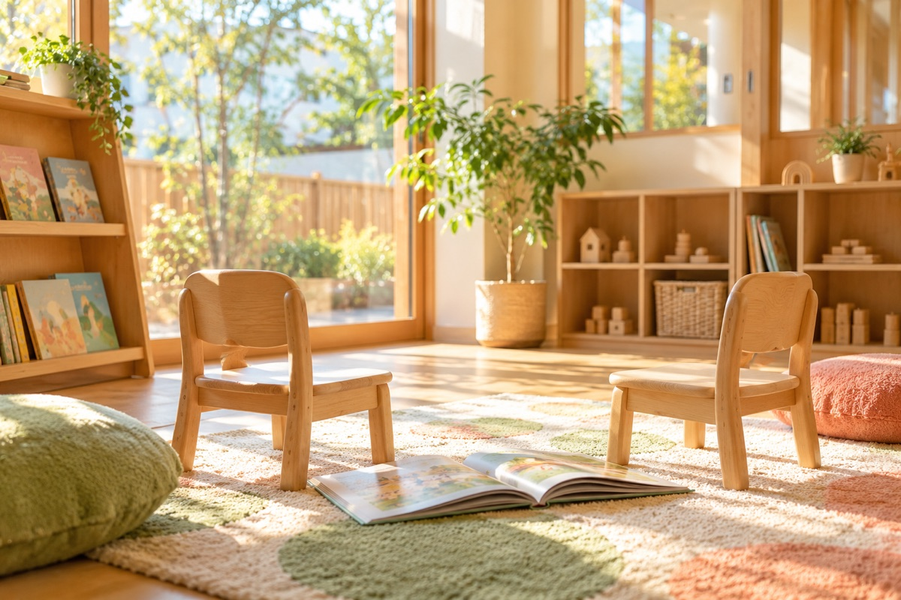

イメージ写真RECRUIT
採用情報
こどもの成長と
自分の成長を
かみのてで働く人
児童指導員、保育士、そして多言語の支援を担うスタッフ。ちがう強みを持った人が集まることで、支援の幅が広がっています。
120日以上年間休日
基本は土日祝休み（正社員）
4対応言語
日本語のほか4つの言語に対応できる職場です
2事業所
かみのてKIDS・かみのてSMILE
5支援の領域
多面的な視点で成長を支えます
FEATURE
かみのてで働く魅力
JOB
おもな仕事内容

イメージ写真児童指導員・保育士
日々の支援の中心です。保育士資格または児童指導員任用資格をお持ちの方。
児童発達支援管理責任者
個別支援計画の作成と、ご家族・学校との連携を担います。
機能訓練担当職員
理学療法士・作業療法士・言語聴覚士・心理担当職員など。週1日からでもお願いできます。
送迎ドライバー
学校へのお迎えとご自宅までのお送り。夕方の数時間だけの勤務です。
SCHEDULE
放課後の仕事の流れ（例）
- 学校へおむかえ下校の時間に合わせて、事業所の車でお迎えに上がります。
- 到着・おやつまずはひと息。学校であったことを聞く時間でもあります。
- 宿題・自由あそびの見守りその子に合わせた課題を用意します。
- きょうの活動5つの領域から、その日のねらいに合わせて活動を組み立てます。
- 帰りの会できたことをみんなで確かめます。
- ご自宅へお送り送迎のときに、その日のようすをおつたえします。
- 記録と申し送りその日のようすを、次につながる形で記録します。
※ 学校のある日の流れの例です。勤務の時間はシフトによって異なります。

イメージ写真INTERVIEW
職員インタビュー
実際に働くスタッフの声を準備中です。公開までしばらくお待ちください。
RECRUIT
募集要項・応募

写真はイメージです